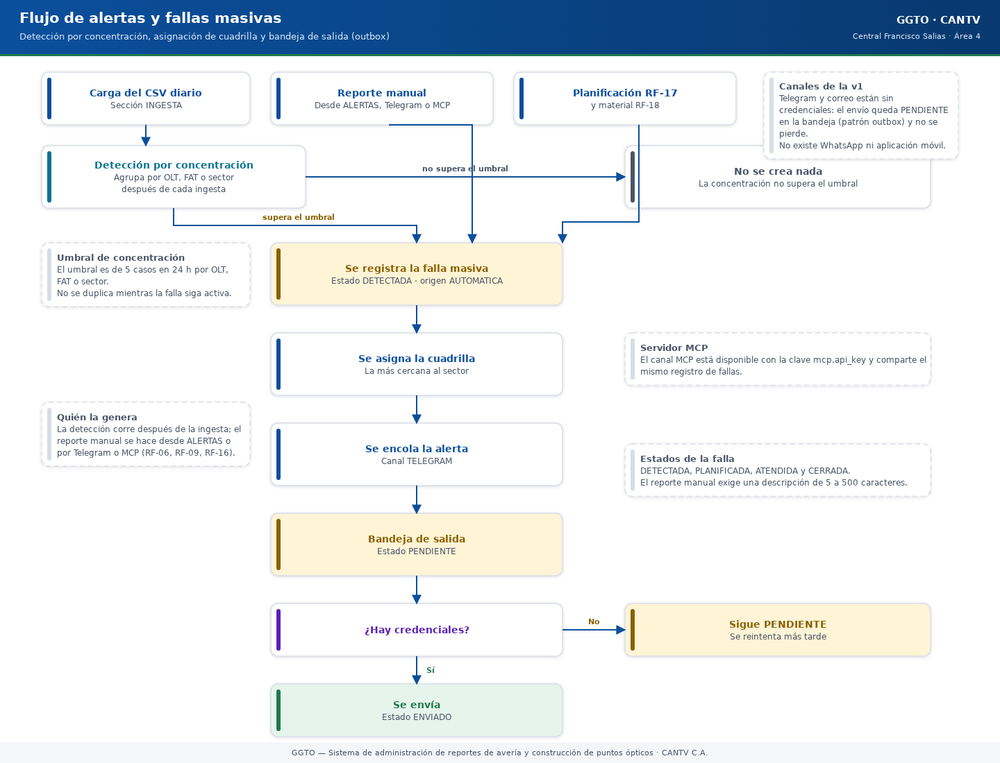
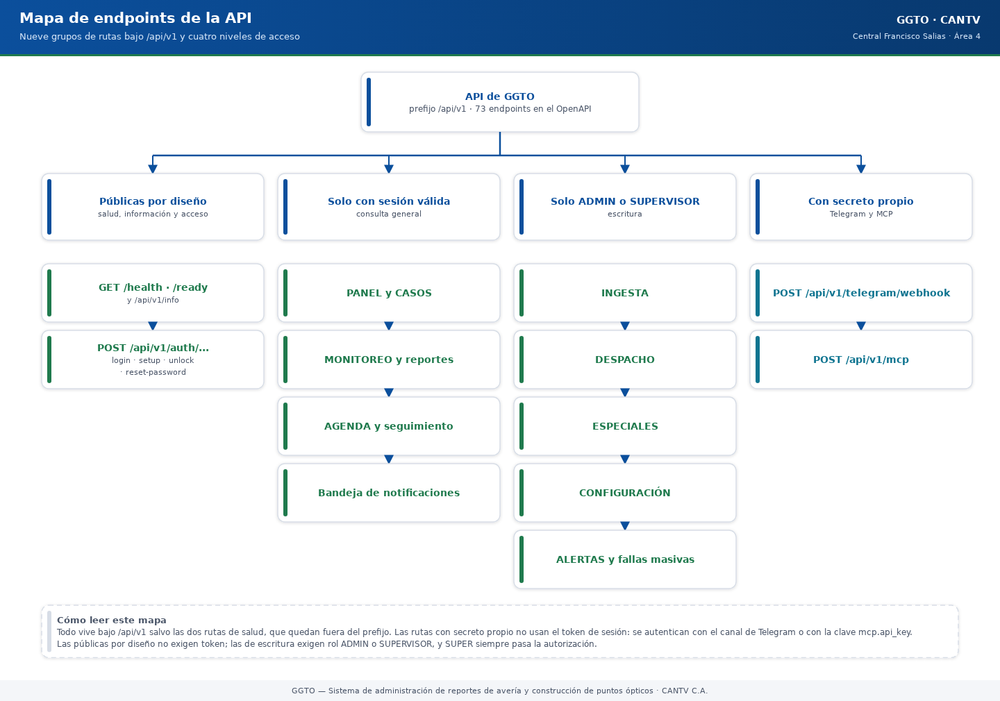

Manual de implementación: autenticación y RBAC
Este manual explica, con palabras sencillas, cómo GGTO reconoce a cada persona, cómo protege su clave y sus palabras de seguridad, qué ocurre cuando alguien se equivoca varias veces al escribir la clave y qué puede hacer cada tipo
Ver en HTML
Descargar PDF

Manual de implementación: módulo CONFIGURACIÓN
Este manual explica, con palabras sencillas, cómo funciona el módulo CONFIGURACIÓN de GGTO: la sección donde se registran la central, los sectores, los técnicos, la flota, las cuadrillas, los catálogos y los parámetros del sistema
Ver en HTML
Descargar PDF

Manual técnico — Ingesta del archivo diario de averías (CSV)
Este manual explica, con palabras sencillas, cómo GGTO recibe el archivo diario de averías que envía el sistema de origen de CANTV, cómo lo limpia y lo revisa, cómo se queda solo con los casos de la central configurada, cómo evita
Ver en HTML
Descargar PDF

Manual técnico — Panel y gestión de casos
Manual para todo público. Explica, en lenguaje sencillo, cómo funcionan el PANEL y el módulo CASOS de GGTO, el Sistema de administración de reportes de avería y construcción de puntos ópticos de CANTV C.A., Central Francisco Salia
Ver en HTML
Descargar PDF

05 — Despacho diario (módulo DESPACHO)
Manual para todo público. Explica, en lenguaje sencillo, cómo funciona el DESPACHO diario de GGTO, el Sistema de administración de reportes de avería y construcción de puntos ópticos de CANTV C.A., Central Francisco Salias (Área 4
Ver en HTML
Descargar PDF

06 — Seguimiento, casos especiales y agenda
Manual para todo público. Explica, en lenguaje sencillo, cómo funcionan en GGTO los casos especiales (referidos, empresas y gobiernos), la agenda de citas y el seguimiento de casos derivados a otras instancias. GGTO es el Sistema
Ver en HTML
Descargar PDF

Manual técnico — Monitoreo y reportes (GGTO, Ciclo 7)
Manual para todo público. Explica, en lenguaje sencillo, cómo GGTO cuenta el trabajo diario y semanal y cómo muestra esas cifras en la página MONITOREO, en sus gráficos y en el reporte de trabajo que se puede imprimir. Está dirigi
Ver en HTML
Descargar PDF

Manual técnico — Alertas, Telegram y MCP (GGTO, Ciclo 9)
Manual para todo público. Explica, en lenguaje sencillo, cómo GGTO detecta fallas masivas, cómo se avisa al personal y cómo se atienden las consultas por Telegram y por MCP (un canal automático para programas). Está dirigido a téc
Ver en HTML
Descargar PDF

API de GGTO — Inventario de Endpoints
Manual para todo público. Explica, en lenguaje sencillo, qué puertas de entrada (endpoints) ofrece el sistema GGTO, quién puede usar cada una y qué códigos de respuesta entrega. Un endpoint es una dirección concreta que un program
Ver en HTML
Descargar PDF